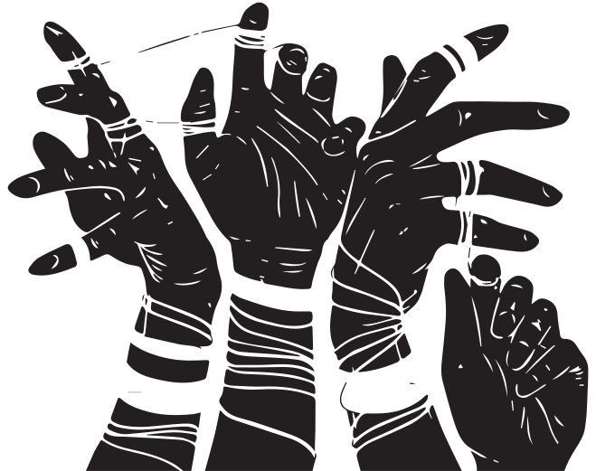
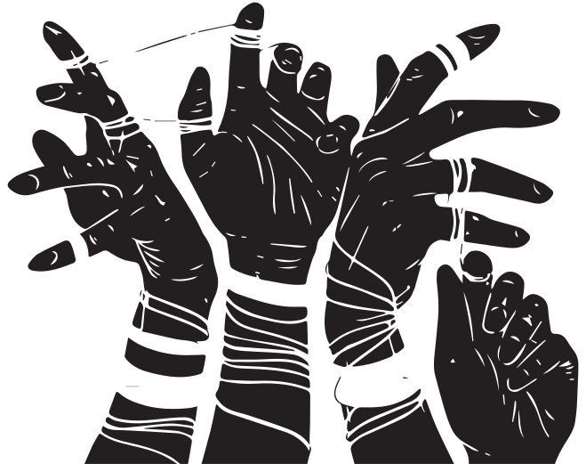

EASY BACKGROUND CHECKS
THE MOST COMMON FEDERAL BACKGROUND CHECK LEGISLATiON WOULD SIMPLY REQUIRE THAT UNLICENSED SELLERS MEET THEIR BUYERS AT A GUN DEALER. THE GUN DEALER WiLL THEN RUN A BACKGROUND CHECK IN EXACTLY THE SAME WAY AS FOR SALES DIRECTLY FROM THE DEALER'S STORE. 99 PERCENT OF AMERICANS LIVE WITHIN 10 MILES OF A GUN DEALER, SO IT'S EASY AND CONVENIENT TO GET THE BACKGROUND CHECK DONE. THERE ARE NEARLY 59,000 UNIQUE GUN DEALERS ACROSS THE COUNTRY, FOUR TIMES AS MANY AS THERE ARE MCDONALD'S AND NEARLY TWICE AS MANY AS U.S. POST OFFICES.